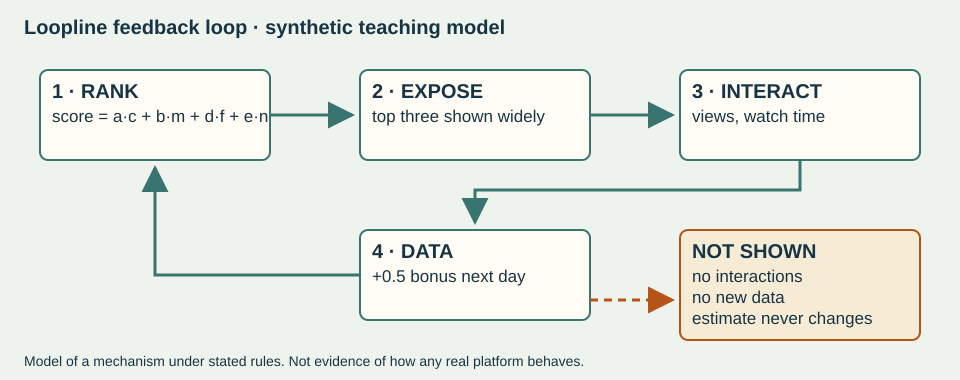
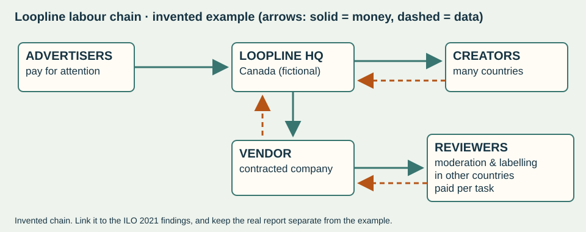
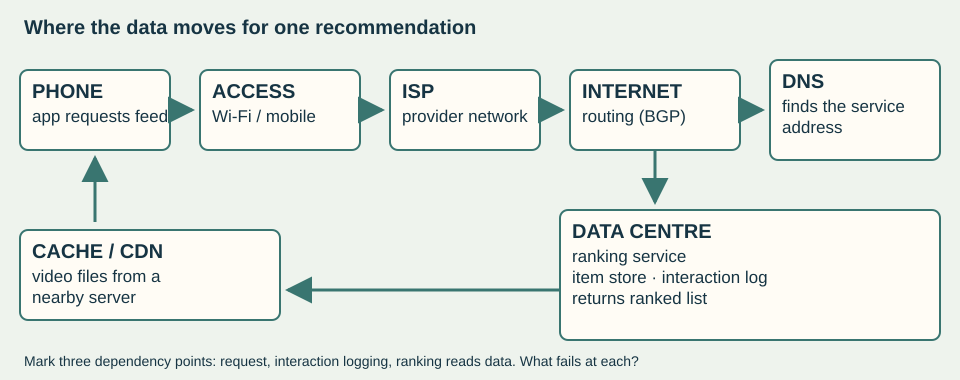

View your exported answer copy
If no download appeared, copy this text into your own document. This is not a submission.
Start here
In Week 5 you ranked four clips for one invented viewer. Now you will run a whole recommender: many items, related tables, two objectives and a feedback loop. Then you will judge who gains and who loses when the objective changes.
The question for these eight lessons
Who benefits when a feed optimizes attention — and what changes if it optimizes discovery instead?
Your route
| Lesson | Planned slot (provisional) | Focus | What happens to your work |
|---|---|---|---|
| ibds-26-s03-d10 | Mon 5 Oct | Trace, search, sort and filter a small dataset + your fresh Sprint 2 transfer attempt (20 min) | Traces checked · feedback; Sprint 2 retry scored /8 |
| ibds-26-s03-d03 | Tue 6 Oct | Run the Loopline recommender under two settings | Checked in class · feedback |
| ibds-26-s03-d04 | Wed 7 Oct | Feedback loops, big data and the people behind the feed | Collected with the workbook · feedback |
| ibds-26-s03-d05 | Thu 8 Oct | Weekly quiz (/12) + amplification paragraph | Quiz scored /12 · paragraph gets feedback, no mark |
| ibds-26-s03-d06 | Fri 9 Oct | Money, culture and access | Collected with the workbook · feedback |
| ibds-26-s03-d07 | Tue 13 Oct | Provider claims vs regulator findings | Source synthesis collected · feedback, no mark |
| ibds-26-s03-d08 | Wed 14 Oct | Redesign practice + independent transfer | Transfer scored /8 · feedback |
| ibds-26-s03-d09 | Thu 15 Oct | Weekly quiz (/12) + defend your rule + network dependency | Quiz scored /12 · defence observed, no mark |
Dates follow the current plan and may move with the school calendar. No formal IA time is used in these lessons.
Reading (printed textbook pages)
- By Thu 8 Oct: pp. 86–89 (algorithmic dilemmas, bias, black box, transparency), pp. 72–74 (big data and the 4Vs), pp. 213–219 (business, work and platforms). Read the explanations and diagrams; the embedded activities are optional.
- By Thu 15 Oct: pp. 220–227 (automation, e-commerce, currencies, globalization) and pp. 31–32 (types of change).
Loopline is invented
Loopline is a fictional short-video platform created for these lessons. Its creators, viewer, numbers and ranking rule are synthetic. It helps you see a mechanism clearly. It is not TikTok’s or anyone else’s real algorithm, and its numbers are not measurements of real people.
Help you may use
In practice tasks you may use the shared Learning Studio Coach to clarify vocabulary, check your understanding of a step, or ask about your own attempt. Copy the context line from the page you are working on. The Coach does not receive anything automatically.
Open the Learning Studio Coach ↗
Not allowed with any AI or Coach: the weekly quizzes, the independent transfer task, and writing your source synthesis or judgments for you. Your approved access arrangements always stay in place.
Downloads
- loopline-items.csv, loopline-creators.csv, loopline-user.csv — the related tables
- Loopline_Model.xlsx — spreadsheet version with editable weights (open in Google Sheets or Excel)
- trace-templates.csv — blank trace tables to print or fill
- feedback-loop.svg, network-path.svg, platform-labour.svg — editable diagrams
- source-grid.csv — for the source synthesis lesson
Trace, search and sort
Search finds. Sort orders. Filter removes. Each does a different job — and each can give a wrong answer if the data is represented badly. Today also includes your fresh attempt at the Sprint 2 transfer.
Retrieval and quiz repair · 5 minutes
Explicit teaching · 12 minutes
| Operation | Job | Loopline example | Stops when |
|---|---|---|---|
| Linear search | Find the first item that meets a condition | Find the first science item | A match is found or the list ends |
| Sort | Put items in order by a value | Order items by a value, highest first | A full pass makes no swaps |
| Filter | Keep only items that meet a condition | Show only clips of 30 seconds or less | Every item has been checked once |
Representation matters. A computer compares exact values: "Football " (capital F, trailing space) is not the same text as "football". Missing values need a stated rule: treating "no data yet" as zero is a design decision, not a neutral fact. A length of zero must be excluded before any division.
Meet the Loopline tables
Loopline stores data in related tables. Items and Creators share the field creator_id. The viewer profile below is for one synthetic viewer. Keep these tables: you will use them all fortnight.
| item_id | creator_id | topic (raw text) | length_s | avg_watch_s | age_days |
|---|---|---|---|---|---|
| V01 | K1 | cooking | 40 | 32 | 5 |
| V02 | K2 | football | 20 | 18 | 1 |
| V03 | K4 | science | 30 | 21 | 1 |
| V04 | K1 | cooking | 60 | 30 | 3 |
| V05 | K5 | music | 25 | 20 | 6 |
| V06 | K3 | football | 50 | 20 | 2 |
| V07 | K6 | art | 40 | — | 0 |
| V08 | K7 | science | 20 | 15 | 4 |
| V09 | K2 | 'Football ' | 30 | 27 | 8 |
| V10 | K8 | language learning | 45 | 36 | 2 |
| V11 | K5 | music | 0 | 0 | 1 |
| creator_id | handle | home country | joined (days ago) |
|---|---|---|---|
| K1 | kitchen_kasia | Canada | 900 |
| K2 | bola_bruno | Brazil | 700 |
| K3 | pitchside_priya | United Kingdom | 1200 |
| K4 | lab_wanjiru | Kenya | 21 |
| K5 | tala_tunes | Philippines | 400 |
| K6 | trazo_mateo | Mexico | 9 |
| K7 | orbit_anika | India | 35 |
| K8 | palabra_lucia | Canada | 14 |
| Viewer profile field | Value |
|---|---|
| user_id | U-ARI (synthetic) |
| recent topics | cooking, football |
| creators already watched | K1, K2, K3 |
Field definitions: length_s = clip length in seconds; avg_watch_s = average seconds watched per view so far (— means no views yet); age_days = days since upload; joined = days since the creator joined Loopline.
Guided lab · 10 minutes · with your teacher
Trace 1 · 4 minutes. Linear search the Items table in order for the first item whose topic is science. Record each comparison. Then predict: how many comparisons for art, and for history? What does the search return when there is no match?
Trace 2 · 6 minutes. Take the first five items (V01–V05) and their avg_watch_s values: V01 32 · V02 18 · V03 21 · V04 30 · V05 20. Run bubble sort to put them in descending order of avg_watch_s. In each pass, compare neighbours from left to right and swap if the left value is smaller. Record every comparison and swap. Stop after a pass with no swaps.
Independent trace · 15 minutes · on your own
Filter the Items table to clips of 30 seconds or less. Which items remain? What should happen to V11? Then do the representation check. The viewer’s recent topics include football. Look at V09’s raw topic text: what would an exact-text comparison decide, and what rule fixes it? Finally, V07 has no views yet. Compare treating it as 0 with giving it a default of 0.50. Which is fairer to a new creator, and what is the risk?
Checkpoint: compare with a partner only after you have written your own answer. If your answers differ, find the exact step where they differ.
Fresh Sprint 2 transfer attempt · 20 minutes · collected
Before this lesson you received feedback on your 29 September independent transfer. Reread your one next action. Your teacher will then hand out a fresh, unseen parallel task (assessment ibds-26-s02-d08, second attempt). Work alone, closed-book, with no AI or Coach. Approved access arrangements apply. Your first attempt is kept; this is a new, separately dated attempt.
Evidence: your traces and error correction with a stated assumption are checked with feedback (no mark). The Sprint 2 fresh attempt is scored /8 as a new attempt under ibds-26-s02-d08. It is excluded from predicted component grades.
Run the Loopline recommender
One equation. Two sets of weights. Watch the order change — and ask whose content becomes visible.
Retrieval · 5 minutes
The ranking equation · 12 minutes
score = a × c + b × m + d × f + e × n
| Variable | Meaning | How to calculate |
|---|---|---|
| c | completion rate | avg_watch_s ÷ length_s (a decimal from 0 to 1). No views yet: use 0.50 and flag it. length_s ≤ 0: exclude the item. |
| m | topic match | 1 if the normalised topic is in the viewer’s recent topics; otherwise 0 |
| f | freshness | 1 if age_days ≤ 2; otherwise 0 |
| n | novelty | 1 if the viewer has not watched this creator before; otherwise 0 |
| Setting | a (c) | b (m) | d (f) | e (n) |
|---|---|---|---|---|
| E · Engagement | 3 | 2 | 1 | 0 |
| D · Discovery | 3 | 1 | 1 | 2 |
Tie rule: if two scores are equal, the item with the higher completion rate goes first; if still tied, the lower item_id goes first.
Worked example on a different item (not in the Loopline table): an item with c = 0.60, m = 1, f = 0, n = 1 scores 3×0.60 + 2×1 + 1×0 + 0×1 = 3.80 under E, and 3×0.60 + 1×1 + 1×0 + 2×1 = 4.80 under D.
Lab · 30 minutes
12 minutes: complete the trace for every valid item under Setting E. Show c, m, f and n, then the score. Use the spreadsheet only to check your hand calculations.
| item_id | c | m | f | n | score E | score D |
|---|---|---|---|---|---|---|
| V01 | ||||||
| V02 | ||||||
| V03 | ||||||
| V04 | ||||||
| V05 | ||||||
| V06 | ||||||
| V07 | ||||||
| V08 | ||||||
| V09 | ||||||
| V10 |
10 minutes: calculate scores under Setting D and rank again. Mark which items move up or down by three or more places.
8 minutes: which creators gain visibility in the top three under D, and which lose it? Use creator IDs and home countries from the Creators table.
Checkpoint: the top item under E and under D. Your teacher will confirm both before you continue. If yours differ, recheck c for that item and the tie rule.
Independent application · 15 minutes
Evidence: your ranked results under both settings and the recorded variable change. Checked in class with feedback. No mark.
Feedback, scale and the people behind the feed
A feed learns from what it shows. Items it never shows produce no new evidence. And behind every feed are people, often in other countries, doing the work.
Retrieval · 5 minutes
Explicit teaching · 12 minutes

| The 4Vs (textbook pp. 72–73) | In a real feed | Loopline’s tiny table |
|---|---|---|
| Volume | Very large amounts of data created every day | 11 rows — far too small to show volume |
| Velocity | Speed at which data is generated, collected and analysed | We rank once per "day"; real feeds update continuously |
| Variety | Many types and formats of data | Only numbers and short text here |
| Veracity | Accuracy and quality of the data | V09’s messy topic text and V11’s zero length are veracity problems |
Lab A · the feedback-loop simulation · 18 minutes
Rules. Each day: rank all valid items. The top three are shown widely. Each time an item is shown, it earns a +0.5 interaction bonus added to its score on all later days. Every item gets one day older each day, so freshness can expire. Items that are not shown get no bonus and no new data.
| Day | Setting E top three | Setting D top three | Notes (ties, freshness changes) |
|---|---|---|---|
| 1 | |||
| 2 | |||
| 3 |
A simulation shows how a mechanism could behave under stated rules. It is not evidence that any real platform behaves this way.
Lab B · people behind the feed · 12 minutes
Source window · International Labour Organization, 23 February 2021. The ILO’s 2021 flagship report found that digital labour platforms had grown about five-fold in a decade. It reported that much of the work on online web-based platforms comes from richer countries but is done by workers in the global South, who often earn much less. It also reported that about half of online platform workers earned under US$2 an hour, and that algorithms increasingly allocate and evaluate work.
ILO news release, 23 February 2021 ↗

Loopline’s labour chain is invented. Use the diagram to trace one flow of money and one flow of data across a border. Then connect the chain to one ILO finding. Keep clear which parts are the real report and which are the invented example.
Independent application · 15 minutes
Evidence: feedback-loop diagram and table, labour-chain trace and your explanation. Collected with the workbook, with focused feedback. No mark.
Weekly quiz and amplification
First, the weekly quiz on paper. Then an important distinction: a feed can amplify a pattern without anybody intending it — and a correlation alone does not show intent or cause.
Weekly quiz · 12 minutes + 5 minutes correction
Your teacher hands out the quiz. It has ten items (/12) and covers this week’s reading plus four items from earlier learning. Work alone, closed-book, with no AI or Coach. Your approved access arrangements apply. After collection, correct your own copy in a different colour. Write why each correction is right.
Explicit teaching · 8 minutes
| Claim | What it needs |
|---|---|
| Correlation | Two things change together (e.g. topics shown more often also get more watch time) |
| Cause | Evidence that changing one thing changes the other, with other explanations ruled out |
| Amplification | A mechanism (like the loop) that makes an existing pattern bigger |
| Intent | Evidence about the designer’s purpose — the output alone cannot show this |
Lab · 25 minutes · amplification investigation
Scenario (synthetic): after three days under Setting E, football and cooking make up almost all of the Loopline viewer’s top-three feed. A classmate says, "Loopline deliberately hides science creators."
Independent application · 15 minutes · Paper 1 practice
Practice question (feedback only, no mark): Explain why an engagement-optimized recommendation loop may amplify a pattern in what users see. [4]
Success criteria: name the mechanism accurately (exposure → interactions → data → ranking); connect each step with a cause; use one specific example from your simulation; qualify your claim so it does not assert intent from correlation.
Evidence: quiz ibds-26-s03-d05 scored /12 (eight multiple choice + two short responses confirmed by your teacher). The paragraph gets written feedback and no mark; it is not added to the /12.
Money, culture and access
Visibility is worth money. A platform’s revenue model shapes what its ranking rewards — and a ranking rule travels, from video feeds to learning platforms.
Retrieval · 5 minutes
Explicit teaching · 12 minutes
Many free platforms earn money from advertising. More attention means more ad views, which is one reason engagement objectives are attractive to platforms. Some platforms share ad revenue with creators, so ranking also redistributes income.
Source window · YouTube Help, “YouTube partner earnings overview” (undated page, checked 27 September 2026). For creators in its partner programme, YouTube states it pays 55% of net revenue from ads shown on their public long-form videos. For Shorts it pays 45% of the revenue allocated to them, based on their share of views in a creator pool. This is one platform’s stated policy, not a rule for all platforms.
YouTube partner earnings overview ↗
Lab · 30 minutes · three linked cases
Case 1 · creator income (10 minutes). Suppose Loopline paid creators 50% of ad revenue from their views, and each top-three slot earned about 1,000 extra views per day. These are synthetic assumptions. Compare which creators would earn more under E and under D. Build a chain: ranking objective → visibility → income → who can afford to keep creating.
Case 2 · a token claim (8 minutes). A fictional start-up says: "Tip creators with LoopCoin, our new token. Its value will rise as Loopline grows." Using textbook p. 223 on cryptocurrencies and tokens, identify what the claim assumes and what could go wrong for a young creator paid in LoopCoin. This is an evaluation of a claim, not financial advice. Do not recommend buying or selling anything.
Case 3 · a learning platform (12 minutes). StudyStream, an invented school practice-video app, uses the same equation. It ranks practice videos by completion, topic match, freshness and novelty. Short, high-completion videos rise; long worked examples in a second language fall. Which learners gain, and which could lose access to what they need? Suggest one change to the variables or weights and say what it would cost.
Independent application · 15 minutes
Before Thursday 15 October, read pp. 220–227 and pp. 31–32 for next week’s quiz.
Evidence: impact → implication chains. Collected with the workbook, with focused feedback. No mark.
What a provider says, what a regulator finds
A platform explaining its system and a regulator investigating it are different kinds of source. Write by theme — and say exactly what an older source cannot prove today.
Retrieval · 5 minutes
Explicit teaching · 12 minutes · origin, purpose, claim, limit
| Ask | Why it matters |
|---|---|
| Who produced it, and why? | A provider explains and reassures; a regulator investigates against legal duties |
| When? | A 2020 explanation cannot show how a system works in 2026 |
| What kind of claim? | Description of design, allegation, preliminary finding, or final decision are not the same |
| What evidence is shown? | Stated design intentions are not measurements of effects |
Source windows
Source A · TikTok Newsroom, “How TikTok recommends videos #ForYou”, 18 June 2020 (provider). It says recommendations draw on user interactions, video information and device/account settings. Signals carry different weights; finishing a longer video counts more than a weak signal like shared location. Follower count and past high-performing videos are not direct factors. It acknowledges the risk of a “filter bubble” and describes interrupting repetition, such as not showing two videos in a row with the same sound or creator, and adding diverse videos.
Source B · European Commission press release, 19 February 2024 (regulator). The Commission opened formal proceedings under the EU Digital Services Act. One area is whether TikTok assessed and reduced risks from its design, including algorithmic systems, that may stimulate behavioural addictions or create so-called “rabbit hole effects”. The release states that opening proceedings does not prejudge the outcome.
Source B (European Commission, 2024) ↗
Source C · European Commission, 6 February 2026 (regulator). The Commission preliminarily found TikTok’s addictive design in breach of the Digital Services Act. It named infinite scroll, autoplay, push notifications and its highly personalized recommender system. It said TikTok did not adequately assess risks to users’ wellbeing, including minors. It pointed to disregarded indicators such as night-time use by minors and how often users open the app. It suggested changes including adapting the recommender system, and stated that these preliminary findings do not prejudge the outcome.
Source C (European Commission, 2026) ↗
These windows are short original summaries. Open the links to check the wording yourself. EU law applies in the EU; these sources are not a ruling about Canada.
Lab · 30 minutes
10 minutes: complete source-grid.csv (or the fields below) for A, B and C. Record origin, date, purpose, main claim and what it cannot show.
12 minutes: sort evidence under two themes: (1) what shapes the feed, (2) risk to users. For each theme, decide whether the sources agree, differ or answer different questions.
8 minutes: link a source claim to your Loopline evidence. Does your feedback-loop simulation support, complicate or fail to test the claim?
Independent synthesis · 15 minutes · collected
Using Sources A and C, compare and contrast what they suggest about how TikTok’s recommendation system affects users. Organize by theme, not source by source. State one thing Source A cannot prove about TikTok today, and why.
Checklist (feedback, not marks): an accurate claim from each source · an explicit relationship (agree, differ, or complement) · specific supporting detail · a source limitation (date, purpose or preliminary status) · a justified inference that does not go beyond the evidence.
Evidence: assessment ibds-26-s03-d07. Collected, unscored, with checklist feedback within five teaching days and a fresh short retry after return.
Redesign practice, then an independent transfer
A ranking objective is a value choice written as numbers. Redesign Loopline, name what your rule values and what it loses — then show you can do it alone on a new case.
Retrieval · 5 minutes
Explicit teaching · 12 minutes · values and trade-offs
- Every weight says what matters. Raising novelty values discovery and new creators. It can cost relevance and trust, if viewers see things they did not ask for.
- Fairness to creators and relevance to viewers can pull in different directions.
- Transparency: can the platform explain the rule to a viewer or a creator? A simple rule is easier to explain but may be easier to game.
- Other designs than weighting: reserve one discovery slot in every five; give viewers a control; cap repeated creators, as Source A describes.
Redesign lab · 25 minutes · practice
Loopline’s owners want new creators to get a fairer chance without annoying viewers. Propose your own rule: change one weight, add a condition, or use a reserved slot. Trace it on at least four items. Record the new top three and who loses a place.
| item_id | c | m | f | n | your rule working | new score |
|---|---|---|---|---|---|---|
Keep this redesign. On Thursday you will defend it in two minutes using your changed results.
Independent transfer · 20 minutes · collected and scored /8
Your teacher will hand out an unseen task on a new case. Read the criteria beforehand. Work alone, closed-book, with a calculator and no AI or Coach. Approved access arrangements apply. The task is not in this workbook.
Evidence: redesign practice checked in class. The unseen transfer is assessment ibds-26-s03-d08, scored /8 with feedback within five teaching days and a fresh retry after return. It is excluded from predicted component grades.
Defend your rule and follow the data
A ranking rule only works if data can move: from a phone, across networks, to data centres and back. When the network fails, the feed fails.
Weekly quiz · 12 minutes + 5 minutes correction
Ten items (/12) on pp. 220–227 and pp. 31–32, plus four items from earlier learning. Closed-book, no AI or Coach, approved access arrangements apply. Correct your copy after collection.
Explicit teaching · 8 minutes · the path of one recommendation

Real case · Engineering at Meta, 5 October 2021. Meta explained that during routine maintenance, a command unintentionally disconnected its data centres from its global backbone network, and an audit tool bug failed to stop it. Its DNS servers then withdrew their routing announcements, so Meta’s services could not be reached across the internet. The same failure also cut off internal tools, slowing the recovery.
Engineering at Meta, 5 October 2021 ↗
Lab · 25 minutes · network dependency sketch
Draw the path of one Loopline recommendation on the diagram template. Mark three places where data must move: request, interaction logging, ranking reading data. For each, say what the viewer or the platform loses if that link fails. Include the interaction bonus: if interactions cannot be logged, what happens to tomorrow’s ranking?
Defend your rule · 5 minutes · observed
In two minutes, to a partner and then your teacher: state your redesigned rule, one changed rank from your trace, one stakeholder who loses, and one network point your rule depends on. Your partner asks one challenge question. Write your repair below.
Independent changed-input check · 10 minutes
Your teacher gives one changed item or weight. Trace it without help, explain the effect on the order, and state one limitation. Keep your first attempt before you repair it.
Evidence: quiz ibds-26-quiz-w07 scored /12. The defence (ibds-26-s03-d09) is observed and collected with one evidence-linked comment and no mark. The network sketch is collected with the workbook.
Reflection and next target
Name what you can now do, the evidence that shows it, and one precise next step.
Reflection is your own evidence of learning. It is not a mark and does not replace your teacher’s judgment.